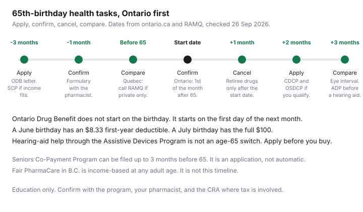

Healthcare · Canada
Turning 65 in Canada: The Health-Cost Programs That Switch On (and What You Still Pay For)
Workplace health coverage does not hand you a public replacement on the morning you turn 65. In Ontario, drug coverage has a start date that is not the birthday. Dental coverage is an application. An eye exam has an interval. A hearing aid has a cap you have to apply for before you buy. This page is the public-program checklist, with Ontario detail and the flags that change the same decision in British Columbia and Quebec. The insurance comparison, including whether a retiree plan is worth keeping, is on the retiree-benefits bridge. This page does not repeat that comparison. It is education, not medical, tax, or insurance advice. Confirm the rule with the program, your pharmacist, and, where a credit is involved, the CRA.
Key takeaways
- Ontario Drug Benefit starts on the first day of the month after you turn 65, not on the birthday. A letter is sent about three months before. The ordinary senior cost is a $100 deductible each program year (1 August to 31 July), then up to $6.11 a prescription. The first year can be less.
- The Seniors Co-Payment Program is an application. For 1 August 2026 to 31 July 2027, the income tests are $25,480 individual net income and $42,290 combined. If you qualify, the deductible is waived and the co-payment is up to $2. You can apply up to three months before you turn 65.
- Dental does not start by itself. The Canadian Dental Care Plan uses an adjusted family net income under $90,000 and a ban on private dental access. The Ontario Seniors Dental Care Program uses $25,480 or $42,290 of net income and allows the federal plan beside it.
- At 65 in Ontario, an optometrist exam is every 12 months with an eligible condition and every 18 months without one, under a bulletin effective 1 September 2023. Government-funded physiotherapy has no fee if you qualify. Hearing-aid funding through the Assistive Devices Program is not an age-65 benefit.
- Glasses, dental the plans do not pay, the hearing-aid amount above the Assistive Devices Program cap, and a private hospital room stay as cash. Do not cancel a retiree drug plan until the public start date is real at the pharmacy.
Drugs: provincial senior coverage (ODB, Fair PharmaCare, RAMQ) and co-pay programs
Ontario sends a letter about three months before your 65th birthday. It says you join the Ontario Drug Benefit on the first day of the month after you turn 65. A birthday on 15 April means a start date of 1 May. Take the health card. The program is for Ontario residents, and the prescription has to be filled at an Ontario pharmacy. The program covers most of the cost of more than 5,900 drugs on the formulary, plus almost 1,500 more through the Exceptional Access Program. It is not a promise that every drug you take today is on that list. Ask the pharmacist, before the start date, which of your prescriptions are covered, which are limited-use, and which need the Exceptional Access Program. Coverage is generally for the lower-cost interchangeable product. A brand-name drug is covered in the cases the page lists, including adverse reactions to at least two generics, with the Side Effect Reporting Form and “no substitution” on the prescription.
Unless another eligibility category applies, or you are in the Seniors Co-Payment Program, a senior pays the first $100 of total prescription costs each program year, 1 August to 31 July, and then up to $6.11 for each prescription filled or refilled. The first year is prorated from the official start date to 31 July. Ontario publishes this chart. The month is the birth month.
| Month you were born | First-year deductible | Month you were born | First-year deductible |
|---|---|---|---|
| July | $100.00 | January | $50.00 |
| August | $91.67 | February | $41.67 |
| September | $83.33 | March | $33.33 |
| October | $75.00 | April | $25.00 |
| November | $66.67 | May | $16.67 |
| December | $58.33 | June | $8.33 |
A July birthday starts coverage on 1 August, which is a full program year, so the deductible is the full $100. A June birthday starts on 1 July, with one month left in the program year, so the first-year deductible is $8.33. After that year, the ordinary deductible is $100 again unless the co-payment program applies. Some chronic drugs, including drugs for diabetes, high cholesterol, and high blood pressure, can be dispensed as a three-month supply, which means the co-payment is paid less often. Ask the pharmacist which of yours qualify. Prescriptions filled outside Ontario are not covered. The travel-supply rule, once per program year, is on the same page: with less than 30 days on hand you can be given up to 200 days, and with 30 days or more you can be given 100 days, with a letter you write or a copy of a travel policy. You still pay the deductible or co-payment on that supply. What the provincial plan pays, and does not pay, once you leave the province is the subject of the snowbird travel medical guide.
The lower co-payment is not automatic. The Seniors Co-Payment Program waives the annual deductible and cuts the co-payment to up to $2 if your income is at or below the threshold. For the program year 1 August 2026 to 31 July 2027, the individual annual net income threshold is $25,480. That figure applies if you have no spouse, if you no longer live in a conjugal relationship with a married spouse, or if your spouse lives in a long-term care home or a community home for opportunity. The combined threshold is $42,290 for a senior who has a spouse other than those cases. The previous window, 1 August 2024 to 31 July 2026, was $25,000 and $41,500. The page says future years are reviewed against the Ontario Consumer Price Index. You can apply up to three months before you turn 65. Apply by 30 September if you want reimbursement for eligible drugs from the previous program year. Receipts for that reimbursement have to arrive by 31 October. A spouse’s information and signature go on the form when the combined test applies, even if the spouse is under 65 or lives outside Ontario. The spouse under 65 is not in the program until they turn 65. If the CRA can verify income, you do not reapply every year unless spousal status changes or a spouse moves into or out of long-term care or a community home for opportunity. If you used other proof of income, you send updated proof each year. The page was updated 2 July 2026.
British Columbia does not switch drug coverage on at 65 in the way Ontario does. Fair PharmaCare is income-based for B.C. residents who are enrolled in the Medical Services Plan and who consent to an income check. A family can be one person. Both spouses register if there are two. Coverage each calendar year uses net income from two years earlier, line 23600. After you register, a consent form has to be back within 30 days. If it is not, temporary coverage ends and the family’s deductible is set at $10,000. Once the deductible is met, PharmaCare pays 70 percent of eligible costs, or 75 percent if a family member was born before 1940. That 75 percent test is a birth year, not “age 65.” Eligible costs include dispensing fees of up to $11 a prescription. After the family maximum, PharmaCare pays 100 percent for the rest of the year. The page’s worked example, a family with 2024 income of $30,589, has a $650 deductible and a $900 family maximum. The deductible resets when the next calendar year starts. An income drop of 10 percent can be sent for an income review. None of that is an Ontario co-payment. If you are moving provinces, register where you will fill the prescription.
Quebec makes drug insurance compulsory. Under 65, if you have access to a private plan you must join it, and cover a spouse and children who are not already on a private plan. At 65, registration in the public plan is automatic. If you also qualify for a private plan, RAMQ says you choose one of three: the public plan only, a private plan that offers at least basic coverage, or the public plan for basic coverage plus a private plan for supplemental coverage. Supplemental coverage does not replace basic coverage, so you must be on the public plan if the private plan is supplemental only. If you want the private plan only, contact RAMQ before you turn 65 so the automatic registration does not happen. You can join the public plan later, and you tell the private insurer yourself. The public plan’s list is the List of Medications, described on the RAMQ page as more than 8,000 drugs. Premiums and co-payments change on RAMQ’s own pages. This checklist does not copy a premium that was not opened here.
Dental: CDCP and Ontario Seniors Dental Care
Nothing in the dental file starts because a birthday passed. The Canadian Dental Care Plan asks for four things at once. You do not have access to private dental insurance, including through a spouse’s work, a pension, a professional or student organization, or a plan you buy, and including a health spending account that covers dental. Declining the coverage, paying a premium, or not using it still counts as access. The stated exception is a retiree who opted out of pension dental before 11 December 2023 and cannot opt back in under the pension rules. You and your spouse, if you have one, filed a Canadian tax return for the previous year. Your adjusted family net income is under $90,000. You are a Canadian resident for tax purposes. The plan’s own definition of adjusted family net income starts with line 23600 for you and for your spouse, subtracts universal child care benefit and registered disability savings plan income on lines 11700 and 12500, and adds those amounts back if they were repaid on lines 21300 and 23200. A provincial or federal social dental program does not by itself block the federal plan. Coverage is coordinated. You attest that you have no private dental access, and the plan can review that attestation against T4 and T4A slips.
The plan pays a percentage of its own fees, not necessarily the dentist’s fee. Under $70,000 of adjusted family net income, it covers 100 percent of eligible services at the established fees, and you may still pay a charge above that fee. From $70,000 to $79,999, it covers 60 percent and you cover 40 percent of the established fees, plus any amount above them. From $80,000 to $89,999, it covers 40 percent and you cover 60 percent. Ask the clinic what you will pay before you sit down. Services that can be covered, when recommended, include exams, X-rays, cleaning, fluoride, sealants, fillings, many root-canal and gum treatments, crowns and dentures with preauthorization on some of them, and some anaesthesia. Orthodontic services are currently not available. Some services need preauthorization before you receive them, and not every request is approved. The My Service Canada Account page for the plan says applications are open for the benefit year 1 July 2026 to 30 June 2027, and that the renewal window closed on 2 June 2026. If you had 2025–2026 coverage and did not renew by 1 June 2026, that page says you can re-apply and that you may have a gap.
The Ontario Seniors Dental Care Program is a second application, not a subset of the federal plan. You are 65 or older, you live in Ontario, and your annual net income is $25,480 or less as a single senior or $42,290 or less as a couple. You have no other dental benefits except the Canadian Dental Care Plan. Private insurance, Ontario Works, the Ontario Disability Support Program, and Non-Insured Health Benefits block it. The page says you may qualify for the federal plan and still be eligible for the Ontario program if you meet the Ontario tests. Covered routine care includes check-ups, scaling, fluoride, polishing, repairing broken teeth and cavities, X-rays, extractions and some oral surgery, anaesthesia, endodontic services, and periodontal services. Some procedures have clinical limits. Dentures are partially covered. Ask the local public health unit what that partial coverage is before you agree to a lab fee. Once enrolled, coverage lasts up to one year and ends on 31 July no matter when you enrolled. The page was updated 31 July 2026. Apply online or by mail. Spouses file two applications. You need a birth date, an Ontario address, a social insurance number or temporary taxation number, and last year’s tax return. Without a social insurance number, or without a filed return, a guarantor helps with a mail application. If approved, a dental card arrives and expires on 31 July. Services run through public health units, partner community health centres, and partner Aboriginal Health Access Centres, and the full range is not the same in every community. Most clients are renewed by an automatic income check. You reapply if you used a guarantor or if you do not file the tax years being checked. The program’s own warning: it contacts you by phone or mail and does not send invoices. A suspicious email is not the enrolment letter.
Eyes, physio and hearing: what age 65 unlocks in Ontario
The optometry change that matters at 65 is an interval, not a free pair of glasses. Ministry INFOBulletin 230902, issued 31 August 2023 and effective 1 September 2023, says seniors with an eligible medical condition can still have an OHIP-insured major eye exam from an optometrist every 12 months. Seniors without an eligible medical condition are eligible every 18 months. Everyone 65 and older can have up to two insured minor assessments from an optometrist in that 12- or 18-month period after an insured major exam. A major exam or periodic oculo-visual assessment by a physician is still insured every 12 months, and that physician interval does not change because an optometrist already billed. If a physician provides the major exam, the bulletin says you are not eligible for insured minor assessments from an optometrist during that period, including post-operative care after cataract surgery. Post-operative cataract care by a physician is insured. The same care by an optometrist can be uninsured if you have used the minor-assessment maximum. The bulletin was updated 22 December 2023. No later bulletin replacing these intervals was opened for this draft. Ask the office which interval applies to you, and whether the next visit is insured, before you book.
Government-funded physiotherapy is an age gate. With a valid Ontario health card, you can receive it at 65 or older, at 19 or under, at any age within 12 months of an overnight hospital stay or outpatient or day surgery that needs physiotherapy, or if you receive Ontario Works or Ontario Disability Support Program benefits. The clinic page, updated 3 February 2026, says there is no fee if you are eligible. Bring the health card. The clinical reason on the page is a recent illness, injury, accident, or surgery that reduced function, or a flare-up of an older problem that did the same. It is an assessment and a treatment plan supervised by a registered physiotherapist at a government-funded clinic. It is not a blank order for any private clinic in the city. Exercise and falls-prevention classes are part of what those clinics may offer. Home physiotherapy goes through Ontario Health atHome. A private clinic visit that is not in this program is a different bill. That bill is the sort of gap a workplace paramedical maximum used to cover, which is why the health and dental gap guide exists. This page does not price a private visit.
Hearing aids do not unlock at 65. The Assistive Devices Program pays toward hearing aids and FM systems for an Ontario resident with a health card and a disability that requires the device for six months or longer. Income is not part of the test. Workplace Safety and Insurance Board funding for the same device, and some Veterans Affairs funding for Group A veterans, block it. If the application is approved, the program covers 75 percent of the cost of hearing aids up to a maximum of $500 a side, and FM systems up to a maximum of $1,350. You pay the rest. You also pay anything the seller charges above what that contribution reaches. The page, updated 2 March 2026, is explicit that you must finish the assessment and the application before you buy. If you buy first, the program pays none of it. An adult starts with a hearing test from an ADP-registered audiologist or hearing instrument specialist. In Ontario, the prescription itself comes from an audiologist or a physician. A hearing instrument specialist cannot prescribe the aid, and can help you get the prescription. Replacements of lost aids are not covered. What changes at 65 is often the workplace plan that used to pay the amount above this cap. The cap was already there.
What stays uninsured: glasses, most dental, hearing aids above ADP, private rooms
The optometry bulletin is about exams. It does not list frames, lenses, or contact lenses as insured services. No page opened for this draft listed routine eyeglasses as an OHIP benefit that starts at 65. The Assistive Devices Program has a visual-aids category for people who meet that category’s clinical rules. That is a device application, not a birthday voucher for a pair of glasses. Get the exam interval sorted first. Then ask what the glasses cost as a private purchase, and whether any of the lenses are being billed as an insured medical device. If the answer is a retail quote, it belongs on the retiree-plan side of the budget, not in the OHIP column.
Most dental stays cash when you miss an income test, when you still have private dental access, or when the service is outside the plan. A crown that needs preauthorization and is not approved is your bill if you proceed. A cleaning priced above the Canadian Dental Care Plan fee leaves the difference with you even when your co-payment percentage is zero. Dentures under the Ontario seniors program are partial, and the partial amount was not printed as a dollar figure on the page opened here, so this checklist does not invent one. If both plans refuse you, the remaining decision is a private policy versus paying the dentist. That decision is the gap guide, not a ranking of insurers.
Hearing aids above the Assistive Devices Program contribution are cash. Seventy-five percent up to $500 a side is the public number. A pair priced well above that contribution is mostly your bill. Repairs are your bill too. The program’s overview page says it does not cover repair costs. Lost aids are not replaced. Batteries are on the program’s list of items it does not cover, including batteries for equipment originally bought through the program. A workplace hearing benefit that survives retirement is sometimes the only thing paying that gap. If it does not survive, price the gap before you are in the booth.
A private or semi-private hospital room was not listed as an insured OHIP service on the pages opened for this draft. Ask the hospital what is insured and what is an uninsured room charge before you agree to the room. Long-term care is a different bill, with published co-payments. Those figures, and the rate reduction, are in the Ontario long-term care guide. Notes, forms, and missed-appointment charges are uninsured physician services. How to question them is in the uninsured fees guide. Travel medical costs outside the province are not a 65th-birthday benefit. Out-of-province limits and the insurance decision sit on the out-of-province travel guide.
Budgeting for a retiree health line and when a retiree plan still makes sense
Build one line in the retirement budget for health costs the public programs leave behind. In Ontario the drug piece is either the $100 deductible plus up to $6.11 a fill, or, if the co-payment program accepts you, up to $2 a fill and no deductible. The dental piece is the co-payment percentage on the federal plan, plus any amount above the plan fee, plus anything the Ontario program does not cover. Glasses are a retail quote until a page says otherwise. Hearing aids are the price minus the Assistive Devices Program contribution, and only if you applied before buying. Travel is a separate premium. Do not add a guessed annual total on top of those rows. A single “seniors spend this much on health” figure was not opened for this draft, so it is not printed here.
A retiree plan still earns its premium when it pays rows the public programs do not, at a premium below what you would pay in cash for those rows. Drugs on the formulary are a weak reason to keep a duplicate drug plan after the Ontario start date, once you have confirmed the start date at the pharmacy. Drugs off the formulary, glasses, hearing aids above the cap, dental above the two public programs, and care outside Ontario are the rows that can still justify a premium. In Quebec, the choice at 65 is the three-way RAMQ choice above, and a private plan that is only supplemental does not let you skip the public plan. The method for comparing the retiree contract, including what happens if you leave and cannot rejoin, is the bridge guide and the retirement insurance review. Cancel the retiree drug card after the public coverage is active, not three months before, because the letter is a warning, not a start date. Unreimbursed amounts that qualify as medical expenses are a tax question. The household checklist is the tax-credits guide. Whether a particular receipt qualifies is a CRA question, not a sentence this page can finish for you.
A 65th-birthday health checklist by month
Use the chart as a calendar, then use the table as the coverage map. Three months out, read the Ontario letter and file the Seniors Co-Payment Program if the income test is even close. The program can be filed up to three months before the birthday, and a wrong guess that you are “a bit over” is how people pay $6.11 instead of $2 for a year. One month out, sit with the pharmacist and mark every drug as covered, limited use, exceptional access, or cash. Before the birthday, in Quebec, call RAMQ if you want a private plan only. On the first day of the next month, in Ontario, fill one prescription and read the receipt before you cancel anything. The month after that, apply for dental if the income tests fit, and do not assume the federal plan and the Ontario program are the same form. In the third month, book the eye exam only if the interval says it is insured, and start a hearing-aid application before you price a pair. Vaccines are on the same map: the shingles page still says a free Shingrix series for seniors aged 65 to 70 who have not had a publicly funded shingles vaccine, and the flu page schedules the next season rather than making influenza an age-65 invention.
| Area | What switches on at 65 in Ontario | Other provinces | What still costs money |
|---|---|---|---|
| Drugs | Ontario Drug Benefit on the first day of the next month. Deductible $100 a program year, then up to $6.11 a fill, unless the co-payment program waives the deductible and cuts the fill to up to $2. | Fair PharmaCare is income-based at any adult age. RAMQ registers you automatically at 65, with a private-plan choice. | Drugs off the formulary, fills outside Ontario, and the deductible or co-payment itself. |
| Dental | Nothing automatic. Ontario Seniors Dental Care is an application at $25,480 single or $42,290 couple, net income, with no private dental benefits. The federal plan can sit beside it. | Canadian Dental Care Plan rules are national. Adjusted family net income under $90,000, and no private dental access. | Amounts above the federal fee, the 40 or 60 percent co-payment bands, dentures only partly covered in Ontario, and orthodontics, which the federal plan says are not available. |
| Eyes | Optometrist major exam every 12 months with an eligible condition, every 18 months without. Up to two minor assessments in that period. Physician major exam still every 12 months. | Not copied here. Ask the provincial plan which exam interval is insured. | Glasses and contact lenses were not listed as an OHIP benefit on the pages opened. A visit outside the interval can be uninsured. |
| Hearing | No new age-65 benefit. Assistive Devices Program: 75 percent up to $500 a side for hearing aids, and up to $1,350 for an FM system, if you qualify and you apply before you buy. | Provincial device programs differ. Do not assume the Ontario cap. | The rest of the invoice, repairs, batteries, and a lost aid. |
| Physio | No fee at a government-funded clinic if you are 65 or older and the visit matches the clinical reasons on the clinic page. | Not copied here. A private clinic is not the Ontario funded-clinic rule. | Private-clinic physiotherapy, massage, and other paramedical care outside the funded clinic. |
| Vaccines | Shingles page: free Shingrix series at ages 65 to 70 if you have not had a publicly funded shingles vaccine. Flu page: adults 65 and older are a high-risk group. For 2026–2027, three flu products are listed, and NACI prefers adjuvanted or high-dose over standard-dose if available. High-risk flu shots are scheduled from the week of 28 September 2026. Everyone 6 months and older is scheduled from 26 October 2026. | Provincial vaccine schedules differ. Use your public health unit. | Shingles vaccine outside the 65-to-70 window on that page. The page still prints a catch-up for people born 1949 to 1953 ending 31 December 2024. Confirm before you book. |
| Travel | No new travel benefit. Ontario Drug Benefit does not pay a prescription filled outside Ontario. A larger supply for a trip is available once per program year, and you still pay the deductible or co-payment. | Provincial out-of-country amounts are on the travel medical guides, not restated here. | Care outside the province, and drugs bought outside Ontario. |

Sources & date stamps
- Ontario, Get coverage for prescription drugs, updated 18 August 2026. Automatic enrolment, $100 deductible, up to $6.11 co-payment, first-year chart, three-month fills, travel supply, strip limits are on the diabetes guide. Opened 26 Sep 2026.
- Ontario, The senior’s Ontario Drug Benefit deductible and prescription co-payment, updated 2 July 2026. Thresholds $25,480 and $42,290 for 1 August 2026 to 31 July 2027. Up to $2 co-payment, no deductible, once enrolled.
- B.C. Fair PharmaCare plan page. Income test, 70 percent or 75 percent if a family member was born before 1940, $10,000 deductible if consent is late, dispensing fees up to $11, worked example $650 and $900. Opened 26 Sep 2026.
- RAMQ, eligibility conditions for the public drug plan. Automatic registration at 65 and the three-way choice. Opened 26 Sep 2026.
- Canada.ca, Canadian Dental Care Plan qualify and coverage pages, and the My Service Canada Account CDCP page. Income under $90,000, co-payment bands, benefit year 1 July 2026 to 30 June 2027, renewal closed 2 June 2026.
- Ontario, Dental care for seniors, updated 31 July 2026. Income $25,480 and $42,290. Coverage ends 31 July.
- OHIP INFOBulletin 230902, effective 1 September 2023, updated 22 December 2023. Eye-exam intervals.
- Ontario, Physiotherapy clinics (government-funded), updated 3 February 2026. No fee if eligible.
- Ontario, Hearing devices, updated 2 March 2026. 75 percent up to $500 a side. Apply before purchase.
- Ontario, Shingles vaccine page, and Flu facts page. Shingles ages 65 to 70. Flu schedule week of 28 September 2026 for high-risk groups, and 26 October 2026 for the general program. Opened 26 Sep 2026.
Frequently asked questions
What health coverage starts automatically at 65 in Ontario?
In Ontario, the Ontario Drug Benefit starts on the first day of the month after you turn 65, and the ministry sends a letter about three months before. Dental programs, the Seniors Co-Payment Program, and hearing-aid help through the Assistive Devices Program do not start by themselves. Quebec’s public drug plan does register you automatically at 65, with a choice if you also have a private plan. An eye-exam interval and government-funded physiotherapy have age-65 rules, and they are not a cheque that arrives in the mail.
Do I need to apply for drug coverage?
In Ontario you do not apply for the basic Ontario Drug Benefit. You do apply for the Seniors Co-Payment Program if you want the deductible waived and the co-payment cut to up to $2, and you can file up to three months before you turn 65. For 1 August 2026 to 31 July 2027 the income tests are $25,480 of individual net income and $42,290 combined. In British Columbia, Fair PharmaCare is a registration at any adult age, and in Quebec you contact RAMQ before you turn 65 if you want a private plan only.
Is dental covered for seniors?
Not automatically. The Canadian Dental Care Plan requires adjusted family net income under $90,000, a filed tax return, Canadian tax residence, and no access to private dental coverage, with a pension opt-out exception dated before 11 December 2023. The Ontario Seniors Dental Care Program is a separate application at net income of $25,480 or less, or $42,290 or less for a couple, and it allows the federal plan beside it. Both can leave you paying amounts above the plan fee, and Ontario dentures are only partly covered.
Should I keep a retiree health plan?
Keep it when it pays rows the public programs leave as cash, at a premium below those rows, and only after you have read the contract’s rule on leaving. In Ontario, do not cancel the drug portion until a prescription adjudicates on the Ontario Drug Benefit, which starts on the first day of the month after you turn 65. The comparison method lives on the retiree-benefits guide. In Quebec, a private plan that is only supplemental does not replace the public plan.
What health costs are still out-of-pocket after 65?
Glasses were not listed as an OHIP benefit on the pages opened for this guide. Dental above the federal and Ontario programs, the share of a hearing aid above the Assistive Devices Program contribution of 75 percent up to $500 a side, and a private hospital room were not shown as benefits that switch on at 65. Prescriptions filled outside Ontario are not an Ontario Drug Benefit benefit. Travel medical costs are a separate decision.